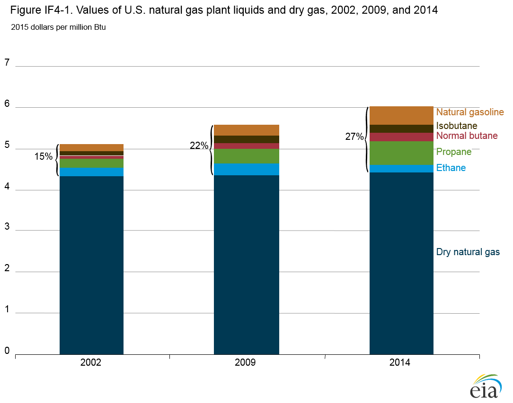
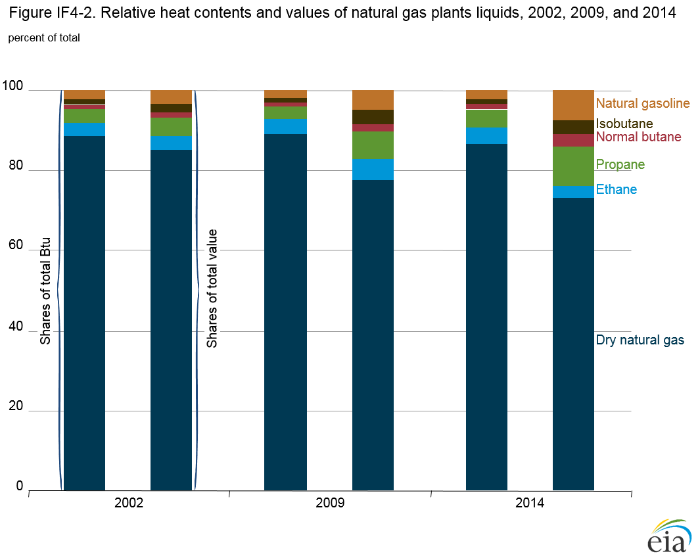
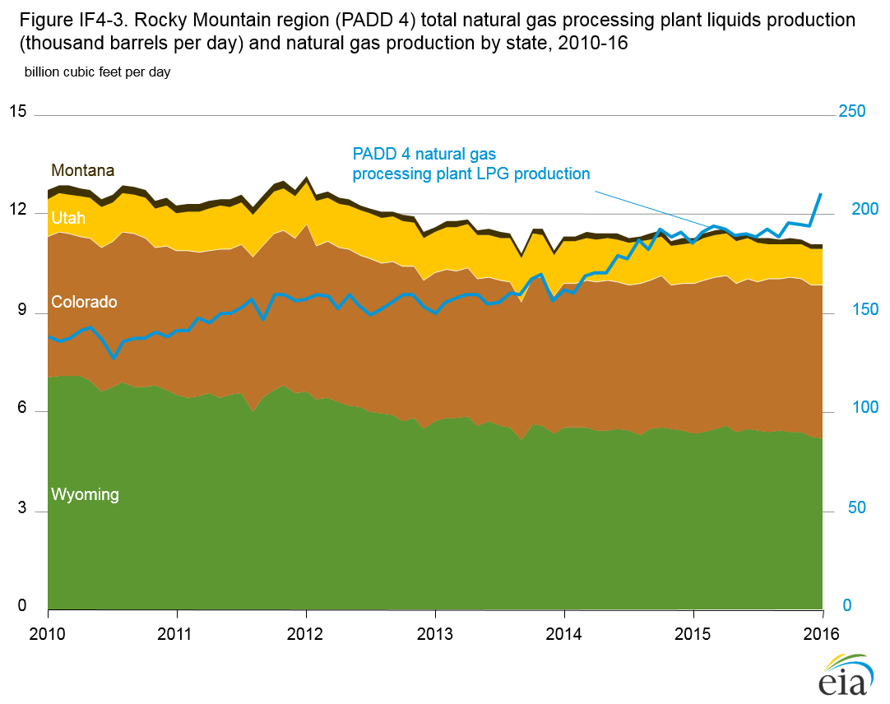
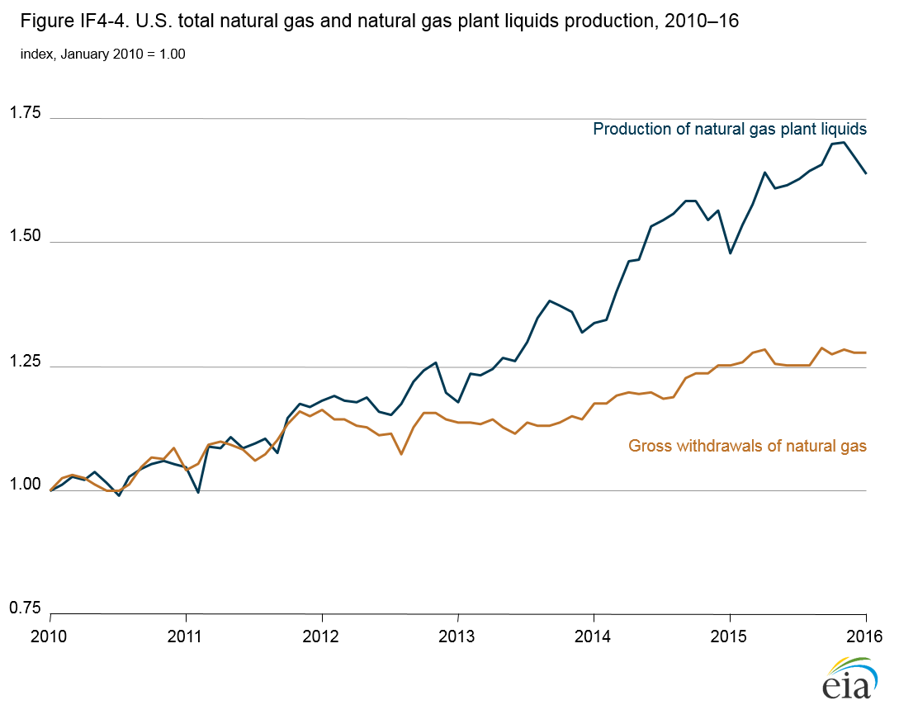
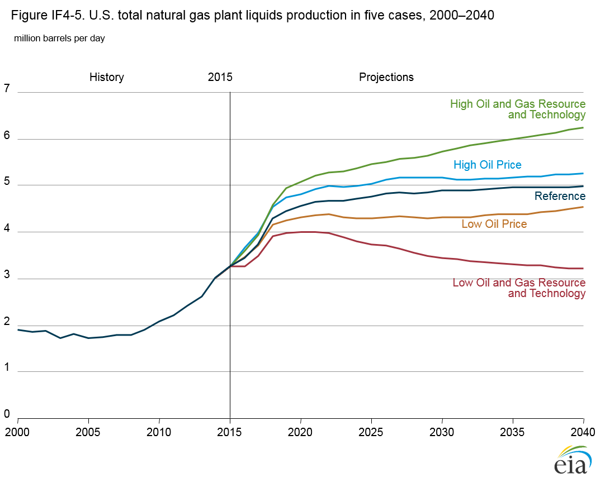
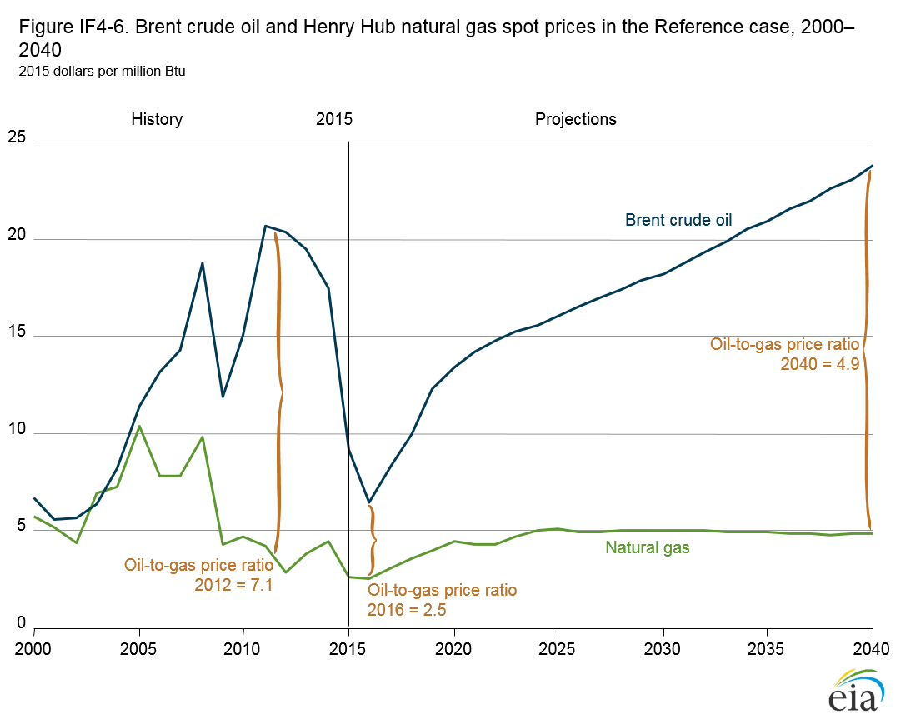

Hydrocarbon Gas Liquids Production and Related Industrial Development
Release Date: 7/6/16
Hydrocarbon gas liquids (HGL) are produced at refineries from crude oil and at natural gas processing plants from unprocessed natural gas. From 2010 to 2015, total HGL production increased by 42%. Natural gas processing plants accounted for all the increase, with recovered natural gas plant liquids (NGPL)—light hydrocarbon gases such as propane—rising by 58%, from 2.07 million barrels per day (b/d) in 2010 to 3.27 million b/d in 2015, while refinery output of HGL declined by 7%. The rapid increase in NGPL output was the result of rapid growth in natural gas production, as production shifted to tight gas and shale gas resources, and as producers targeted formations likely to yield natural gas with high liquids content.
NGPL, contained in the unprocessed natural gas stream, are recovered from natural gas at gas processing plants, yielding a stream of liquids that is then separated at fractionation plants into ethane, propane, normal butane, isobutane, and natural gasoline, as well as dry natural gas (or residue gas), which is moved to markets. On an energy content basis, NGPL prices historically have been close to the prices of petroleum products and are generally well above the price of natural gas. This premium on the recovered NGPL portion of the unprocessed natural gas stream generates additional revenue beyond what is achievable from the sale of unprocessed natural gas at the dry natural gas prices alone.
The additional revenue from NGPL sales can vary significantly, depending on the relative prices of NGPL and natural gas (Figure IF4-1). NGPL prices are linked to both crude oil prices and natural gas prices. In 2002, 2009, and 2014, Henry Hub spot natural gas prices averaged between $4.33 and $4.44 per million British thermal units (Btu), while North Sea Brent crude oil prices averaged $5.63 per million Btu ($32.33/barrel (b)) in 2002, $11.81 per million Btu ($67.82/b) in 2009, and $17.40 per million Btu ($99.92/b) in 2014 (all prices in 2015 dollars).

figure data
Changes in industry practice, combined with the increasing premium generated by the NGPL component of the unprocessed natural gas stream relative to dry natural gas, resulted in both an increasing share of Btu coming from NGPL, relative to dry natural gas, and rapid growth in the value generated by those liquids, relative to the dry natural gas component of the unprocessed natural gas. Consequently, although the NGPL contribution to the total Btu value of natural gas produced increased only marginally, from 11.6% in 2002 to 13.4% in 2014, its contribution to the total value of natural gas produced nearly doubled, from 15.1% in 2002 to 26.7% in 2014 (Figure IF4-2).

figure data
Natural gas production from tight and shale gas formations has grown rapidly in recent years. From 2010 to 2015, total U.S. gross withdrawals, the broadest measure of total wellhead flows, increased by 23%, from 73.5 billion cubic feet per day (Bcf/d) to 90.1 Bcf/d. The geography of natural gas production has also changed over this period, with the northeastern United States (previously a net recipient of large amounts of natural gas from the rest of the country and abroad) now producing more natural gas than it uses. The Marcellus Formation, which underlies much of West Virginia, Pennsylvania, and other states in the northern Appalachian region, has become the most prolific natural gas-producing formation in the country. The presence of the Utica Formation, which overlaps but is deeper than the Marcellus Formation, bolsters production in the Northeast and improves the economics for producers, adding to their return on investment.
Changes accompanying the rapid shift of natural gas production, both geographically and geologically, have required all segments of the oil and gas industry to adapt: producers have moved personnel and equipment to the locations of the new resources; midstream companies have started building additional natural gas processing and pipeline capacity; and consuming industries such as power producers and petrochemicals have invested in new plants and related infrastructure.
The recent surge in natural gas production, together with several mild winters that lower natural gas demand, resulted in a decline in U.S. natural gas prices (as reported at the Henry Hub natural gas trading hub) from $6.33/million Btu in January 2010 to $2.23/million Btu in January 2016 (2015 dollars). The increasing spread between spot natural gas prices and Brent crude oil prices, on which NGPL prices are largely based, spurred producers to explore for and develop natural gas resources that yield a higher share of NGPL. When crude oil prices started falling in late 2014, the premium commanded by NGPL over dry natural gas diminished, and producers began to shift activity out of areas with high liquids yield to resources yielding higher quantities of pipeline-ready natural gas at the lowest net production cost.
| Key characteristics | Niobrara Formation | Jonah Field |
|---|---|---|
| Crude oil | ||
| Crude oil to natural gas (barrels per million cubic feet) |
86.4 | 9.5 |
| Crude oil heat content (million Btu/barrel)a |
5.570 | 4.980 |
| Wet natural gas | ||
| Heat content
(Btu/standard cubic foot)b |
1,350 | 1,215 |
| Composition (percent of total) | ||
| Methane | 76.2% | 77.9% |
| Ethane | 13.7% | 8.7% |
| Propane | 5.5% | 4.2% |
| Butane | 2.6% | 2.5% |
| Pentane | 0.8% | 3.2% |
| Inert gases | 1.2% | 3.5% |
aHeat content of oil barrel calculated by U.S. Energy Information Administration based on reported API gravity and/or reported composition of crude oil. bHeat content for Niobrara Formation is as reported; heat content for Jonah field is estimated based on gas composition. |
||
Activity in the Rocky Mountains region (Petroleum Administration for Defense District 4 [PADD 4]) illustrates the shift from development of dry natural gas resources to wet natural gas resources as the ratio of crude oil prices to natural gas prices increases. Historically, Wyoming has accounted for most of the natural gas production in PADD 4. In January 2010, more than 7 Bcf/d of natural gas was produced in Wyoming, accounting for 56% of the PADD 4 total. Natural gas produced in Wyoming is generally considered dry. The U.S. Geological Survey has reported that natural gas produced from coalbed resources in the Powder River Basin, which underlies eastern Wyoming and Montana, contains “trace amounts (0.005 to 0.97 parts per million) of [other] hydrocarbons (for example, propane, isobutane, butane, isopentane, and pentane)” [1]. Composition of the unprocessed natural gas produced from the considerably wetter Jonah field in western Wyoming (Table IF4-1) includes 16.4% hydrocarbons, and the gas produced has a heat content of 1,215 Btu per standard cubic foot (Btu/scf)—well above the heat content of 1,010 Btu/scf for dry natural gas consisting of 100% methane.
Unprocessed natural gas produced from the Niobrara Formation [2], located predominantly in Colorado, has an even higher heat content of 1,350 Btu/scf and an NGPL content of 22.6%. The natural gas comes out of a lease separator at the wellhead and requires further processing to remove impurities and to separate out the NGPL before the dry natural gas is suitable for transport via interstate pipelines. In the Niobrara Formation, significant quantities of liquids, classified as crude oil, also are recovered at the lease separator. Because of the high ratio of crude oil to natural gas volumes produced from the Niobrara Formation, it is considered a crude oil resource, and activity in the field is determined more by the economics of crude oil and NGPL than by the economics of natural gas.
The shift of production in PADD 4 from Wyoming to Colorado since 2009 reflects a broader shift of natural gas production from dry to wet resources, in part because of consistently high crude oil prices from 2011 through the third quarter of 2014. After reaching more than 7 Bcf/d in January 2010 (56% of PADD 4 production), natural gas production in Wyoming declined by 1.9 Bcf/d (25% of PADD 4 production) to 5.0 Bcf/d in January 2016 (46% of PADD 4 production). Natural gas production in Colorado increased from 4.2 Bcf/d in 2010 (33% of PADD 4 production) to 4.6 Bcf/d in January 2016 (42% of PADD 4 natural gas production), approaching the production levels in Wyoming.
The focus of producers on crude oil resources and natural gas that is rich in NGPL has led to more production of liquids in PADD 4, even as natural gas output has declined (Figure IF4-3). From January 2010 to January 2016, PADD 4 production of propane and butanes increased by 52%, from 138 thousand b/d to 210 thousand b/d [3], while gross withdrawals of natural gas declined by 13%, from 12.7 Bcf/d in January 2010 to 10.9 Bcf/d in January 2016.

figure data
The increase in PADD 4 propane and butanes production, at a time when natural gas production growth is stagnant or falling and when crude oil production is declining, mirrors trends in NGPL production nationwide. Even the reduction of activity in the wettest areas over the past year or so has not slowed the growth of NGPL production, which has exceeded the growth of dry natural gas production (Figure IF4-4).

figure data
The growth of NGPL output since 2010–11 has outpaced the growth of domestic demand. The resulting market imbalance has spurred investment in midstream and downstream capacity to process, transport, store, consume, and export increasing quantities of HGL. For example, projects either completed since 2013 or currently under construction will increase the capacity to produce ethylene from ethane by 31%—from 29 million metric tons (mmt)/year to 38 million mmt/year. Investments made in propane dehydrogenation (PDH) capacity, which converts propane to propylene) [4], have increased total PDH capacity more than threefold—from 0.66 mmt/year to 2.16 mmt/year. U.S. capacity to export HGL also has undergone significant expansion since 2013. Capacity to ship propane and butane overseas has grown by more than 550%—from 0.2 million b/d in 2013 to 1.32 million b/d in 2017, and capacity for marine exports of ethane, which only five years ago were not considered viable, have increased from zero to 0.28 million b/d [5]. EIA estimates total investment in these projects at approximately $33 billion, and more projects have been proposed with completion dates in 2018 and beyond [6].
NGPL production in AEO2016
The future production profile for NGPL will be determined to a large extent not only by the natural resources endowment but also by production economics, which are influenced primarily by natural gas and crude oil prices and the spread between their prices on an energy-equivalent basis. In the Annual Energy Outlook 2016 (AEO2016), the High Oil and Gas Resource and Technology case and the Low Oil and Gas Resource and Technology case, as well as the High Oil Price case and the Low Oil Price case (Figure IF4-5), reflect different possible futures for U.S. NGPL production. The High and Low Oil and Gas Resource and Technology cases have a more significant effect on NGPL output because of changes in natural gas and crude oil production. In the High and Low Oil Price cases, production levels are influenced by the changes in value resulting from increases or decreases in the amount of NGPL contained in the unprocessed natural gas.

figure data
As in the 2010–14 period, when a high premium for liquids led to a shift in natural gas production to those areas where natural gas yielded higher shares of NGPL relative to dry natural gas, the AEO2016 results suggest varying rates of NGPL production growth, depending on relative crude oil and natural gas prices. Until crude oil prices began their sustained decline in the fourth quarter of 2014, natural gas producers generally had chosen wet gas production over dry natural gas production. That choice required some tradeoffs: wet gas needs to be processed before it can be injected into interstate natural gas pipelines for delivery as dry natural gas to consumers, and wells drilled in formations that yield wet natural gas generally have lower initial production rates. However, the extra revenue generated by the liquids can improve the economics of natural gas production and create an incentive to focus drilling on wet natural gas resources.
In the AEO2016 Reference case, with Brent crude oil prices rising from an average of $37/b in 2016 to $136/b in 2040 (2015 dollars), the oil-to-gas price ratio (2015 dollars/million Btu) increases from 2.5 in 2016 to 5.0 in 2040 (Figure IF4-6). Total U.S. NGPL production increases from 3.5 million b/d in 2016 to 4.8 million b/d in 2025 and to almost 5 million b/d in the late 2030s. In the Low Oil Price case, with oil prices remaining below $40/b until 2022 and then increasing to $73/b in 2040, NGPL production averages between 4.3 million b/d and 4.5 million b/d from 2020 to 2040, even as natural gas production grows from 75 Bcf/d in 2016 to 115 Bcf/d in 2040. In the High Oil Price case, natural gas production increases at a slightly higher rate, to 127 Bcf/d in 2040, and NGPL production increases rapidly to 5.0 million b/d in 2025 and then levels off at about 5.2 million b/d from 2025–40. The additional revenue from NGPL sales also shifts production to other regions of the country, resulting in a decrease in PADD 4 natural gas output, where unprocessed natural gas is generally drier, and an increase in production from the Bakken Formation (primarily associated with oil production) and parts of the Marcellus Formation, centered around western Pennsylvania and the West Virginia panhandle, where the unprocessed natural gas has a relatively high liquids content.

figure data
Downstream development
Since 2012, when NGPL production started to increase, the U.S. industry has responded with an aggressive build-out of capacity to consume or export the liquids. Operators of petrochemical crackers (plants designed to convert ethane, propane, and normal butane, as well as naphtha, to ethylene, propylene, and other building blocks of the petrochemical industry) announced plans to expand their facilities to take advantage of the rising availability of feedstock, particularly NGPL. In the first wave of projects in the United States from 2012 to 2015, an additional 300,000 b/d of feedstock demand, primarily for ethane, was developed through plant expansions and restarts of mothballed facilities. In the second wave from 2016 to 2018, large established petrochemical companies, including Dow Chemical, Chevron Phillips Chemical, and ExxonMobil, have announced plans for new large-scale ethylene crackers and propane dehydrogenation facilities that would increase demand for ethane feedstock by up to 0.5 million b/d and for propane feedstock by an additional 0.15 million b/d by 2018. In the third wave from 2019 onwards, a further 0.37 million b/d expansion of ethane and propane feedstock demand has been proposed. In addition, midstream companies brought more than 0.97 million b/d of propane and butane export capacity into service by the end of 2015, with another 0.2 million b/d of propane and butane capacity and nearly 0.2 million b/d of marine ethane export capacity slated to come online by the end of 2018.
In the AEO2016 Oil and Gas Resource and Technology cases and Oil Price cases, the significant commitment of capital to projects in the first and second waves of petrochemical industry expansion, as well as most of the export capacity expansion, results in completion of the projects. However, later waves of petrochemical projects, as well as any further expansion of U.S. HGL export capacity, have different outcomes across those cases.
The primary motivation for the buildout of U.S. industrial and export HGL capacity is the impact of the wide price spread between U.S. natural gas prices and international crude oil prices on NGPL production, which creates a price advantage for U.S. producers relative to producers in other countries. As such, any narrowing of the price spread would reduce the competitive advantage and reduce opportunities for exports of U.S. NGPL to international destinations, possibly to the point of making exports of spot cargoes unprofitable. However, for many countries seeking to diversify sources of supply for strategic reasons, the United States may still have an advantage in long-term contracts. The price spread has narrowed recently, and sponsors of major petrochemical projects in the United States have announced postponements of some investment decisions, pushed back completion dates, and scaled down the scopes of some projects.
In the High Oil Price case, U.S. natural gas producers are projected to target formations with the highest liquids content, resulting in greater supply of NGPL to the U.S. market. In addition, the High Oil Price case provides U.S.-based petrochemical plants with a cost advantage relative to their international peers, resulting in better opportunities for U.S. exporters in international markets. With an estimated $33 billion in projects between 2013 and 2017 directly tied to the growing availability of HGL feedstock, and billions more in associated upstream and downstream activities, HGL-related economic activity has become a major factor in the U.S. economy. Depending on future prices, developments in the U.S. petrochemical industry may provide either further growth in this segment of the U.S. economy or a slowdown from recent high activity levels.
Endnotes
- R.M. Flores, Coalbed Methane in the Powder River Basin, Wyoming and Montana: An Assessment of the Tertiary-Upper Cretaceous Coalbed Methane Total Petroleum System, Version 1.0 (Denver, CO: U.S. Geological Survey, Information Services, 2004), p. 14, http://pubs.usgs.gov/dds/dds-069/dds-069-c/REPORTS/Chapter_2.pdf.
- U.S. Energy Information Administration, “Niobrara Region Drilling Productivity Report” (Washington, DC: May 2016), http://www.eia.gov/petroleum/drilling/pdf/niobrara.pdf.
- Ethane, an NGPL that may be recovered or left in pipeline natural gas, depending on gas processing economics, is not included in the total.
- U.S. Energy Information Administration, “Today in Energy: Growing U.S. HGL production spurs petrochemical industry investment” (Washington, DC: January 29, 2015), https://www.eia.gov/todayinenergy/detail.cfm?id=19771.
- U.S. Energy Information Administration, “Short-Term Outlook for Hydrocarbon Gas Liquids,” Appendix, pp. 21–22 (Washington, DC: March 2016), http://www.eia.gov/outlooks/steo/special/supplements/2016/hgl/pdf/2016_sp_01.pdf.
- Based on publicly available data from company announcements and SEC filings, EIA estimates average investment requirements of $2.8 billion per million metric tons per year of ethylene capacity, $2 billion per million metric tons per year of PDH capacity, $0.2 billion per 0.1 million barrels per day of propane and butane export capacity, and $0.6 billion per 0.1 million barrels per day of marine ethane export capacity.